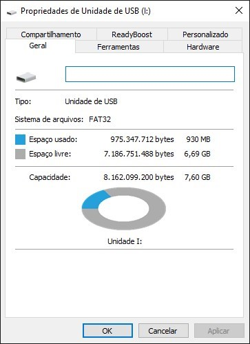
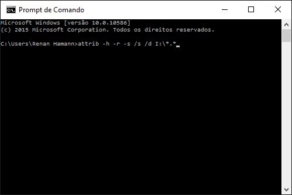
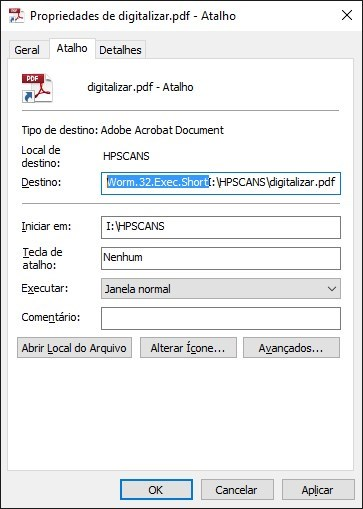
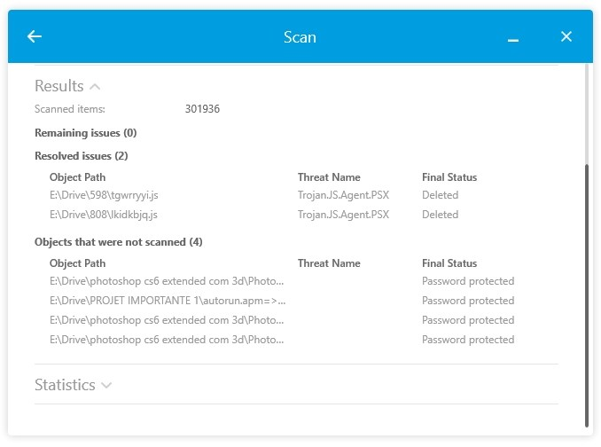

Aprenda a remover vírus de pendrive que converte arquivos e pastas em atalhos
Aprenda a remover vírus de pendrive que converte arquivos e pastas em atalhos
Existe um tipo de praga que vem perturbando a vida de muitos usuários de mídias flash há anos. Trata-se de um vírus que infecta o pendrive e converte documentos e programas em meros atalhos. Tal atividade impede que o utilizador abra qualquer coisa e muitas vezes leva a uma atitude desesperadora: a formatação da unidade removível.
A solução do problema não é tão complicada e pode poupar algumas dores de cabeça. Primeiramente, vale salientar que o vírus não apaga nenhum arquivo do pendrive. Esta praga apenas oculta documentos e cria atalhos falsos, por isso mantenha a calma.
Agora que sabemos que os arquivos, em teoria, estão no pendrive, devemos verificar se o problema em questão está relacionado ao vírus. Para averiguar se seus arquivos continuam na unidade, veja se no ícone do pendrive (disponível em “Meu Computador”) o espaço utilizado continua idêntico ao que era anteriormente.
Caso o Windows informe que a unidade está vazia, então é possível que o vírus que você pegou seja outro. Do contrário, a execução dos passos a seguir deverá resolver seu problema.
Recuperando arquivos
1. Abra o Prompt de Comando (basta pressionar a tecla "Windows" e então inserir o comando "cmd.exe").
2. Já no Prompt, digite o seguinte comando: "attrib -h -r -s /s /d I:\*.*" (Nota: a letra “I” deve ser substituída pela letra atribuída ao seu pendrive).
Método manual
Acesse a pasta que foi afetada pelo vírus e clique com o botão direito sobre o arquivo contaminado (que atualmente é um atalho). Abra as Propriedades do arquivo.
Acesse a aba “Atalho” e remova quaisquer informações que não tenham relação com o caminho do arquivo em questão (realizar o processo no item "Destino" e "Iniciar em"). Veja o exemplo abaixo:
Atenção redobrada!
Caso seu pendrive apresente anormalidades, é possível que outros vírus (como malwares que criam pastas adicionais e inserem arquivos desconhecidos) tenham infectado o componente. Alguns vírus podem criar pastas com nomes aleatórios, onde os vírus podem estar armazenados.
Nesses casos, após realizar as etapas acima, você pode deletar os arquivos e pastas indesejadas e usar um antivírus para conferir se não há outros itens infectados (confira o exemplo na imagem abaixo, em que o antivírus BitDefender encontrou um Trojan).
Atenção: é importante que você tome o devido cuidado para não executar itens suspeitos, já que eles podem causar danos a outros arquivos do computador.
Etapas finais
- Utilize um bom antivírus e analise o pendrive e o HD.
- Instale um anti-malware no seu computador e faça outra varredura no disco local e na unidade removível.
- Se nenhum problema for informado pelos programas, então o vírus deve ter sido removido do seu pendrive. Em casos de persistência do problema, tente outros softwares. Boa sorte!